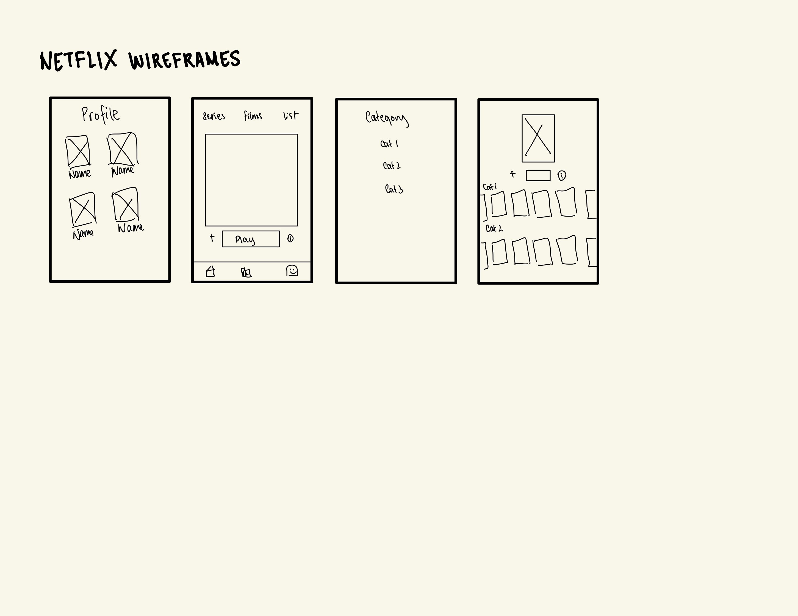
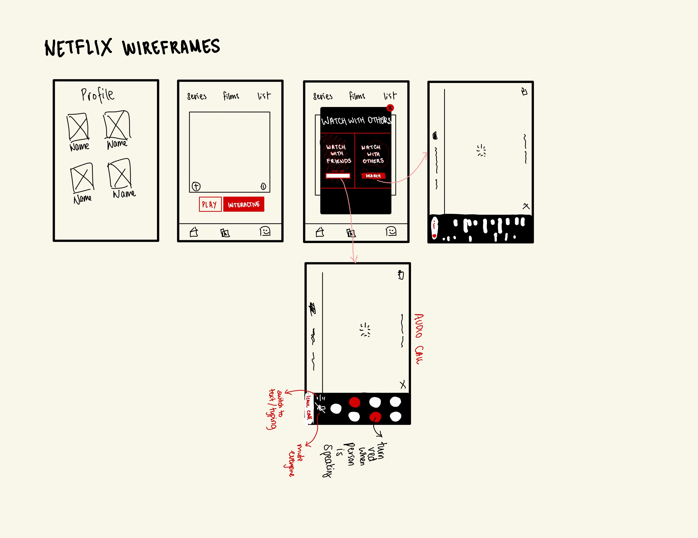

-
Using the favorite website you chose in homework 1, create a wireframe for one page of it using pen/paper, PowerPoint, or any your tool of choice. (use the 'img' tag!) Make sure to let us know what the name of your website is (Use the 'p' tag!)
The website I chose was netflix.com!
 -
Try to improve the website you've chosen, and create a redesigned wireframe of one page for the same website using the principles of visual hierarchy that you learned from the article.

-
What is the goal of the website? Who is it intended for? How does the design accomplish this? Write 2-3 sentences answering these questions. (Use the 'p' tag again!)
The goal of netflix is to make watching tv shows/movies more convenient by allowing people to access and watch selection of shows online. The target audience is young adults looking for a more convenient way to watch shows online. The website's design accomplishes this through a user friendly interface and information architecture. The show that is most appealing/highest match to user's preferences is featured and it guides the user's eyes down to other selection of shows. It also allows users to easily search for, and browse their favorite content.
-
Write 2-3 sentences about what problems your redesign addressed, and how it solved them.
Netflix is convenient, but it doesn't quite replicate the "watch movie at a theater experience," because some/most people end up watching it alone. It still lacks that social aspect, which this feature directly addresses. By adding a social component and allowing people to watch shows together on app (instead of through an extension like Teleparty, etc.), it can strengthen existing connections (watch with friends), or even forge new ones (watch with strangers with mutual interests), especially since are in an era wheren people are looking for ways to stay connected virtually. It also aligns with the trend of remote socializing, and lead to an increase in user engagement
NOTE: Make sure to include the wireframe images in the website and don't just put it in your assets folder!
Your wireframes should look something like this: